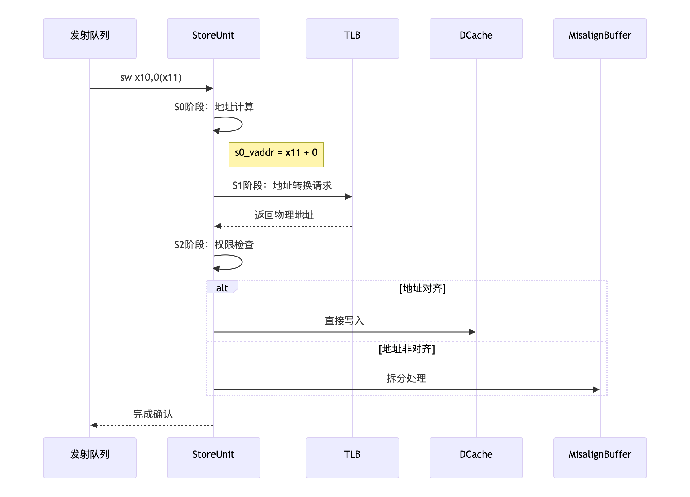
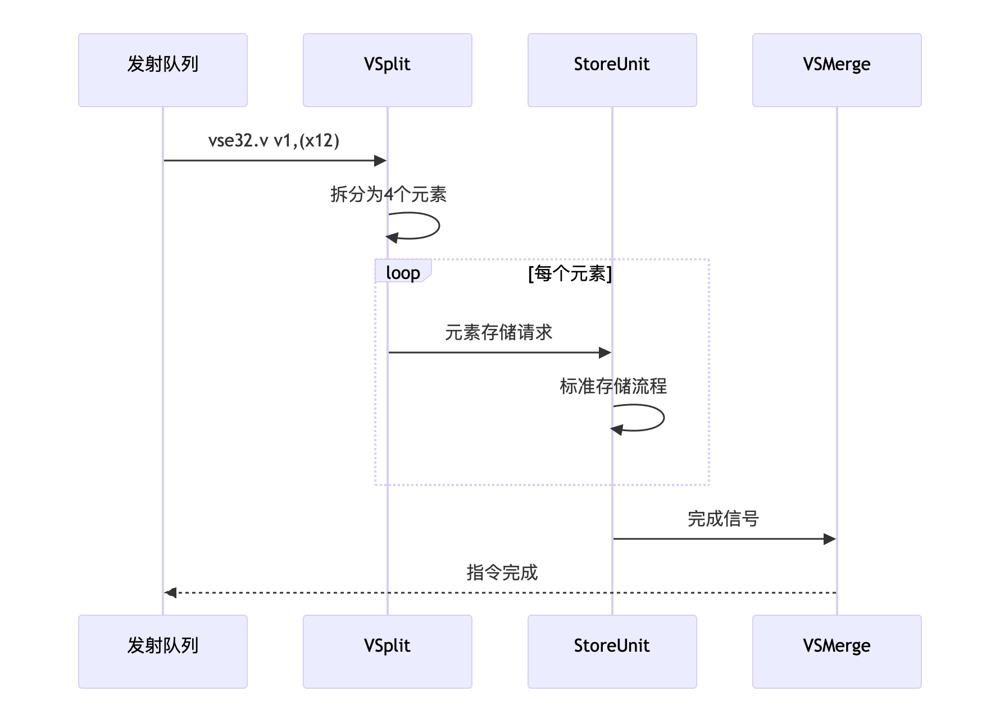
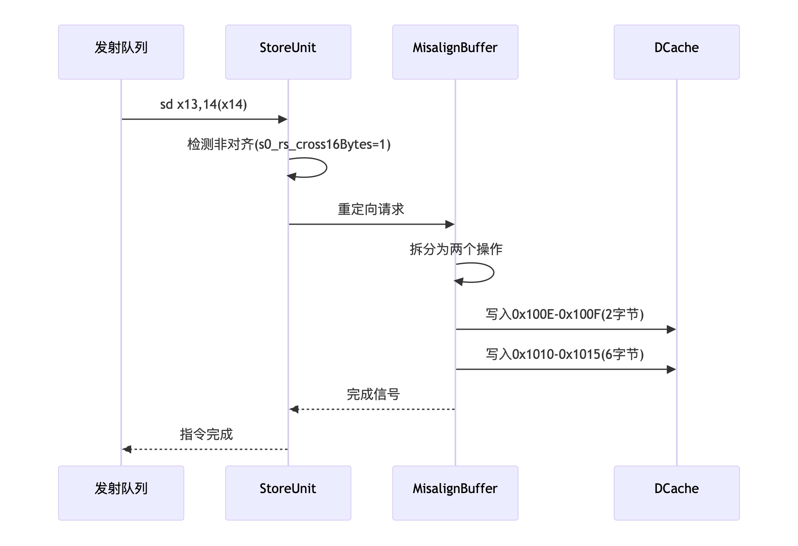
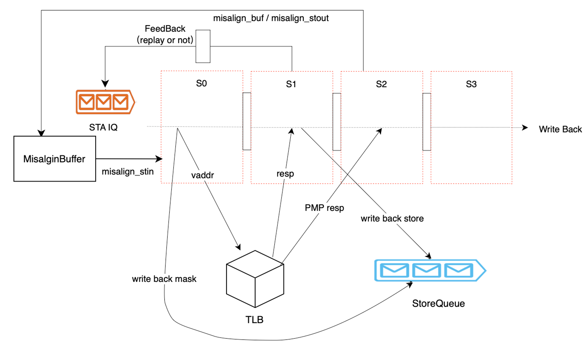
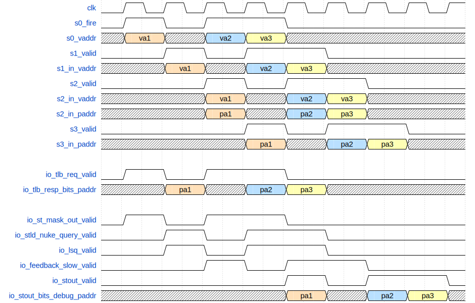

本文档参考香山LSQ设计文档写成
请注意，本文档撰写的测试点仅供参考，如能补充更多测试点，最终获得的奖励可能更高！
本文档参考香山LSQ设计文档写成
请注意，本文档撰写的测试点仅供参考，如能补充更多测试点，最终获得的奖励可能更高！
请注意，本文档撰写的测试点仅供参考，如能补充更多测试点，最终获得的奖励可能更高！
本文档描述了StoreUnit的结构与功能，并根据功能给出测试点参考，方便测试的参与者理解测试需求，编写相关测试用例。 StoreUnit 是存储指令执行单元 ，由多个协同工作的子模块组成，包括其五级流水线处理流程、支持的三种类型store指令（标量、向量、非对齐）、接口设计与信号交互逻辑。该模块用于执行Store类指令的地址生成与处理，是Load/Store流水线中的关键组成部分。
| 名称 | 定义 |
|---|---|
| TLB（Translation Lookaside Buffer） | 地址转换旁路缓冲器，用于虚拟地址到物理地址的快速转换 |
| PMP（Physical Memory Protection） | 物理内存访问权限检查机制 |
| RAW（Read After Write）违例 | 写后读违例，表示一个load指令读取尚未写入的store数据 |
| MMIO（Memory-Mapped Input/Output） | 内存映射IO |
内存单元里包含2条Store地址流水线与2条Store数据流水线。各流水线独立接收并执行对应发射队列派发的指令。

由4级结构组成：
Store地址流水线（4级结构）
stage 0:
计算VA地址
非对齐 > 向量 > 标量请求的优先级仲裁
地址非对齐检查更新到uop.exceptionVec
对地址的16字节边界检测
发出DTLB读请求到tlb
更新指令的掩码信息到s0_mask_out发送到StoreQueue
判断是否为数据宽度为128bits的store指令。
stage 1:
接收TLB地址转换响应，TLB若缺失则重试
查询LoadQueueRAW以进行违规检查
与加载单元s1和s2阶段的Load指令进行RAW冒险检测
如果DTLB hit，将store issue信息发送到后端
stage 2:
mmio/PMP检查、检查原子操作权限
更新storeQueue中标记为地址就绪状态
更新DTLB结果通过feedback_slow更新到后端
stage 3:
标量store发起写回，通过stout发送给后端
StoreQueue条目释放与状态清理
对于除 SEG指令外的向量内存访问指令，VSSplit 负责接收向量内存访问指令发射队列发送的微操作（uop），并将该微操作拆分为多个元素。随后VSSplit 将这些元素发送至StoreUnit 执行，执行流程与标量内存访问指令相同。执行完成后，元素会被写回至 VSMerge，其中 Merge 模块会将这些元素收集并组合成微操作，最终写回向量寄存器文件。 SEG 指令则由独立的 VSegmentUnit 模块处理。

StoreUnit处理非对齐Store指令流程和标量类似，特别的:
stage 0:
stage 1:
stage 2:
stage 3:
香山核支持标量与向量内存指令对存储空间进行非对齐访问。
标量非对齐访问未跨越16B边界时可正常执行，无需特殊处理，而跨越16B边界的标量非对齐内存访问在MisalignBuffer中拆分为两次对齐内存操作，完成后由MisalignBuffer处理拼接与写回。
向量非Segment的Unit-stride指令访问连续地址空间，合并元素后一次访问16B，因此无需特殊处理。
非Unit-stride的非Segment向量指令由VSplit模块完成元素拆分与地址计算后发送至流水线。若元素非对齐则发送至MisalignBuffer，后续过程与非对齐标量相同，区别在于MisalignBuffer最终写回至VMerge而非直接后端
向量Segment指令的非对齐处理由VSegmentUnit独立完成，不复用标量内存访问路径，通过独立状态机完成
原子指令、MMIO与NC地址空间均不支持非对齐访问，这些情况将触发AccessFault异常。

StoreUnit处理非对齐Store指令流程和标量类似，特别的:
stage 0:
stage 2:
不需要向后端发送feedback响应
如果不是来自于StoreMisalignBuffer的请求并且没有跨越16字节边界的非对齐请求，那么需要进入StoreMisalignBuffer处理
如果是来自与StoreMisalignBuffer的请求并且没有跨越16字节边界请求，则需要向StoreMisliagnBuffer发送重发或者写回响应
通过io_misalign_sout接口，向StoreMisalignBuffer发送响应
如果出现TLB miss，则需要重发，否则写回
RAW内存违例：处理器核执行的Load指令的结果应来源于当前处理器核观察到的全局内存顺序中最新的写操作。具体而言，若最新的写操作来自当前核的Store指令，则Load应获取该Store写入的数据。为优化Load指令性能，超标量乱序处理器会投机执行Loads。因此，Load指令可能早于地址相同的更早Store执行，从而获取到该Store之前的旧值，即构成RAW内存违例。
Store指令地址流水线分为S0/S1/S2/S3四级,如图所示：

接收store地址发射队列发来的请求，处理完成之后需要给后端和向量部分响应，处理过程中需要给发射队列反馈信息，给StoreQueue反馈信息，最后写回, 如果中间出现异常则从发射队列重新发射。
StoreUnit是存储指令的逻辑，功能被解构并集成到了 Memory Dispatch Queue、STA、STD、Integer ALUs、StoreQueue、SBuffer、LoadQueueRAW/RAR以及 DTLB 等一系列子模块中。
Store指令存在复杂的控制机制（如顺序、转发、违例等），因此需要队列来保存Store指令的先进先出顺序以进行相关控制，该队列即StoreQueue。Store指令在完成译码、重命名等操作后，需要派发至ROB与LSQ，分配对应的robIdx、lqIdx与sqIdx，随后进入各自发射队列。在所有源操作数就绪后发射至MemBlock中的流水线。在MemBlock中的执行生命周期内，Store指令会携带lqIdx与sqIdx，用于内存违例检测与数据转发时的顺序维护。
对于标量内存访问指令，一条指令分配一个StoreQueue表项。
对于向量内存访问指令，一条指令在译码阶段会被拆分为多个uop，每个uop包含若干元素，相当于一次内存访问操作。在派发时，一个uop会分配与其包含元素数量相等的多个LSQ表项。
| 序号 | 功能名称 | 测试点名称 | 描述 |
|---|---|---|---|
| 1.1 | SU_DISPATCH | SCALAR_DISPATCH | 验证标量Store指令派发时分配一个StoreQueue条目。 |
| 1.2 | SU_DISPATCH | VECTOR_DISPATCH | 验证向量Store指令的一个uop分配多个LSQ条目（根据元素数量）。 |
| 序号 | 功能名称 | 测试点名称 | 描述 |
|---|---|---|---|
| 2.1 | SU_STORE | S0_ADDRESS_CALC | 验证s0阶段地址计算和仲裁。 |
| 2.2 | SU_STORE | S1_RAW_CHECK | 验证s1阶段RAW冒险检测。 |
| 2.3 | SU_STORE | S2_SQ_MARK_READY | 验证s2阶段StoreQueue地址就绪标记。 |
| 序号 | 功能名称 | 测试点名称 | 描述 |
|---|---|---|---|
| 3.1 | SU_VECTOR | SPLIT | 验证向量指令拆分正确性。 |
| 3.2 | SU_VECTOR | OFFSET | 元素偏移计算 |
存储指令会被发射队列重新传输，在一个存储指令被发射队列发射后，队列不会立即清除该指令，直到StoreUnit返回信号。StoreUnit根据TLB是否命中发送相应反馈。如果TLB未命中，则由指令发射队列负责重新发送该指令。
RAW内存访问违例检测：LoadQueue中的LoadQueueRAW模块通过FreeList结构记录所有可能地址相同但尚未执行更早Store的Load指令。当Load指令在LoadUnit执行到s2阶段（此时地址转换与PMA/PMP检查已完成）时，会分配LoadQueueRAW表项。当StoreQueue中所有Store地址就绪后，LoadQueueRAW中的所有Load可释放；或当程序顺序早于它的所有Store地址就绪后，该Load可从LoadQueueRAW释放。若Store指令在查询LoadQueueRAW时发现存在地址相同的更晚Load，则发生RAW内存访问违例，需要回滚。
RAW内存访问违例恢复：检测到RAW违例时，由LoadQueueRAW发起回滚，从造成违例的Store指令的下一条指令开始清空流水线。
| 序号 | 功能名称 | 测试点名称 | 描述 |
|---|---|---|---|
| 5.1 | SU_RAW | VIOLATION | 验证RAW违例检测。 |
| 5.2 | SU_RAW | RECOVERY_MECH | 验证检测到RAW违例后的恢复（流水线清空）。 |
根据RVWMO模型，在多核场景下（无FENCE等栅栏语义指令时），一个核的Store指令可以比地址不同的更晚Load指令更晚对其他核可见。该内存模型规则主要优化Store指令性能。RVWMO等弱一致性模型允许处理器核包含SBuffer，暂时保存已提交的Store写操作，合并这些写操作后再写入DCache，从而减少Store指令对DCache SRAM端口的争用，提高Load指令执行带宽。
SBuffer为16×512B的全相联结构。当多个Store地址落在同一缓存块时，SBuffer会合并这些Store。
SBuffer每周期最多可写入2条Store指令，每条Store指令写数据位宽为16B（例外：cbo.zero指令按缓存块操作，一次操作一个缓存块）。
SBuffer换出：
当SBuffer容量超过一定阈值时，执行换出操作，按PLRU替换算法选择被替换块写入DCache
SBuffer支持被动清空机制；FENCE/atomic/向量Segment等指令执行时会清空SBuffer
SBuffer支持超时清空机制；超过2^20周期未被换出的数据块将被驱逐
| 序号 | 功能名称 | 测试点名称 | 描述 |
|---|---|---|---|
| 6.1 | SU_SBUFFER | WRITE_MERGE | 验证同一缓存块的多个Store在SBuffer中合并。 |
| 6.2 | SU_SBUFFER | PLRU_REPLACE | 验证SBuffer满时按PLRU策略替换。 |
香山核仅允许标量内存访问指令访问MMIO地址空间。MMIO访问与任何其他内存操作强顺序。因此，MMIO指令必须等待成为ROB头（即所有前序指令均完成）时才能执行。对于MMIO Store指令，需完成虚地址到实地址转换，通过实地址检查，且写数据就绪。随后LSQ将内存请求发送至Uncache模块，通过总线访问外设。结果返回LSQ后写回至ROB。
原子指令与向量指令不支持MMIO访问。若此类指令访问MMIO地址空间，将触发对应AccessFault异常。
| 序号 | 功能名称 | 测试点名称 | 描述 |
|---|---|---|---|
| 7.1 | SU_MMIO | ORDER | 验证MMIO指令强顺序执行（成为ROB头）。 |
| 7.2 | SU_MMIO | EXCEPTION | 验证原子/向量指令访问MMIO触发异常。 |
香山核除支持访问非幂等、强顺序的MMIO地址空间外，还支持访问幂等、弱一致性（RVWMO）的Non-cacheable地址空间，简称NC。软件通过页表PBMT字段配置为NC以覆盖原有PMA属性。与MMIO访问不同，NC访问允许乱序内存操作。
在StoreUnit流水线中被识别为NC地址（PBMT = NC）的内存访问指令会在LSQ中标记。LSQ负责将NC访问发送至Uncache模块。Uncache支持同时处理多个NC请求，支持请求合并，并负责向正在LoadUnit执行的NC Load转发Stores。
| 序号 | 功能名称 | 测试点名称 | 描述 |
|---|---|---|---|
| 8.1 | SU_NC | EXEC | 验证NC访问允许乱序执行。 |
| 8.2 | SU_NC | FORWARD | 验证Uncache模块的Store到Load转发。 |
| 序号 | 功能名称 | 测试点名称 | 描述 |
|---|---|---|---|
| 9.1 | SU_MISALIGN | SCALAR_SPLIT | 验证标量非对齐访问跨越16B边界时拆分为两个对齐访问。 |
| 9.2 | SU_MISALIGN | EXCEPTION | 验证原子指令、MMIO、NC空间非对齐访问触发异常。 |
| 常量名 | 常量值 |
|---|---|
| VAddrBits | (Sv39) 39, (Sv48) 48 |
| GPAddr Bits | (Sv39x4) 41, (Sv48x4) 50 |
| StoreExeUnit | 2 |
| StoreUnit | 2 x 8B/16B |
| StoreQueue | 56 |
| StoreBuffer | 16 x 64B |
| VSMergeBuffer | 16 |
| Store TLB | 48项全相联 |
| 信号名 | 方向 | 位宽 | 描述 |
|---|---|---|---|
| clock | input | 1 | 时钟信号，用于同步时序 |
| reset | input | 1 | 复位信号，用于重置模块状态 |
| io_redirect_valid | input | 1 | 重定向有效信号，指示是否有重定向操作 |
| io_redirect_bits_robIdx_flag | input | 1 | 重定向ROB索引标志，指示是否需要重定向 |
| io_redirect_bits_robIdx_value | input | 8 | 重定向ROB索引值 |
| io_redirect_bits_level | input | 1 | 重定向级别信号，表示重定向的优先级 |
| io_csrCtrl_hd_misalign_st_enable | input | 1 | 控制Misalign Store启用信号，指示是否启用未对齐存储 |
| io_stin_valid | input | 1 | 输入有效信号，指示是否有有效的存储指令 |
| io_stin_bits_uop_ftqPtr_flag | input | 1 | 指令FTQ指针标志，标记指令在队列中的位置 |
| io_stin_bits_uop_ftqPtr_value | input | 6 | 指令FTQ指针值，指示指令在队列中的位置 |
| io_stin_bits_uop_ftqOffset | input | 4 | 指令FTQ偏移量，指示指令在队列中的偏移 |
| io_stin_bits_uop_fuType | input | 35 | 功能单元类型，指示该指令使用的功能单元类型 |
| io_stin_bits_uop_fuOpType | input | 9 | 功能单元操作类型，指示该指令执行的操作类型 |
| io_stin_bits_uop_rfWen | input | 1 | 指令是否写入寄存器，表示是否更新寄存器值 |
| io_stin_bits_uop_imm | input | 32 | 指令立即数，包含该指令中的常数值 |
| io_stin_bits_uop_pdest | input | 8 | 指令目的寄存器编号，表示数据存储的目标寄存器 |
| io_stin_bits_uop_robIdx_flag | input | 1 | ROB索引标志，表示是否使用ROB索引 |
| io_stin_bits_uop_robIdx_value | input | 8 | ROB索引值，指示指令对应的ROB索引 |
| io_stin_bits_uop_debugInfo_eliminatedMove | input | 1 | 指令优化消除的移动，标识指令是否被优化 |
| io_stin_bits_uop_debugInfo_renameTime | input | 64 | 指令重命名时间，记录指令的重命名时间 |
| io_stin_bits_uop_debugInfo_dispatchTime | input | 64 | 指令调度时间，记录指令进入调度队列的时间 |
| io_stin_bits_uop_debugInfo_enqRsTime | input | 64 | 指令入队时间，记录指令进入执行队列的时间 |
| io_stin_bits_uop_debugInfo_selectTime | input | 64 | 指令选择时间，记录指令被选中执行的时间 |
| io_stin_bits_uop_debugInfo_issueTime | input | 64 | 指令发射时间，指示指令进入执行单元的时间 |
| io_stin_bits_uop_debugInfo_writebackTime | input | 64 | 指令回写时间，表示指令将结果回写到寄存器的时间 |
| io_stin_bits_uop_debugInfo_runahead_checkpoint_id | input | 64 | 预执行检查点ID，用于标记预执行阶段的检查点 |
| io_stin_bits_uop_debugInfo_tlbFirstReqTime | input | 64 | TLB首次请求时间，记录指令发起首次TLB请求的时间 |
| io_stin_bits_uop_debugInfo_tlbRespTime | input | 64 | TLB响应时间，记录指令收到TLB响应的时间 |
| io_stin_bits_uop_lqIdx_flag | input | 1 | Load Queue索引标志，指示是否使用Load Queue |
| io_stin_bits_uop_lqIdx_value | input | 7 | Load Queue索引值，标识该指令在Load Queue中的位置 |
| io_stin_bits_uop_sqIdx_flag | input | 1 | Store Queue索引标志，指示是否使用Store Queue |
| io_stin_bits_uop_sqIdx_value | input | 6 | Store Queue索引值，标识该指令在Store Queue中的位置 |
| io_stin_bits_src_0 | input | 64 | 数据源0，提供给指令执行的数据源 |
| io_stin_bits_isFirstIssue | input | 1 | 是否是第一次发射，表示指令是否首次被发射 |
| io_misalign_stin_valid | input | 1 | Misalign Store输入有效信号，指示Misalign Store是否接收有效数据 |
| io_misalign_stin_bits_uop_exceptionVec_0 | input | 1 | Misalign Store输入异常向量0，表示是否发生异常 |
| io_misalign_stin_bits_uop_exceptionVec_1 | input | 1 | Misalign Store输入异常向量1，表示是否发生异常 |
| io_misalign_stin_bits_uop_exceptionVec_2 | input | 1 | Misalign Store输入异常向量2，表示是否发生异常 |
| io_misalign_stin_bits_uop_exceptionVec_4 | input | 1 | Misalign Store输入异常向量4，表示是否发生异常 |
| io_misalign_stin_bits_uop_exceptionVec_5 | input | 1 | Misalign Store输入异常向量5，表示是否发生异常 |
| io_misalign_stin_bits_uop_exceptionVec_8 | input | 1 | Misalign Store输入异常向量8，表示是否发生异常 |
| io_misalign_stin_bits_uop_exceptionVec_9 | input | 1 | Misalign Store输入异常向量9，表示是否发生异常 |
| io_misalign_stin_bits_uop_exceptionVec_10 | input | 1 | Misalign Store输入异常向量10，表示是否发生异常 |
| io_misalign_stin_bits_uop_exceptionVec_11 | input | 1 | Misalign Store输入异常向量11，表示是否发生异常 |
| io_misalign_stin_bits_uop_exceptionVec_12 | input | 1 | Misalign Store输入异常向量12，表示是否发生异常 |
| io_misalign_stin_bits_uop_exceptionVec_13 | input | 1 | Misalign Store输入异常向量13，表示是否发生异常 |
| io_misalign_stin_bits_uop_exceptionVec_14 | input | 1 | Misalign Store输入异常向量14，表示是否发生异常 |
| io_misalign_stin_bits_uop_exceptionVec_16 | input | 1 | Misalign Store输入异常向量16，表示是否发生异常 |
| io_misalign_stin_bits_uop_exceptionVec_17 | input | 1 | Misalign Store输入异常向量17，表示是否发生异常 |
| io_misalign_stin_bits_uop_exceptionVec_18 | input | 1 | Misalign Store输入异常向量18，表示是否发生异常 |
| io_misalign_stin_bits_uop_exceptionVec_19 | input | 1 | Misalign Store输入异常向量19，表示是否发生异常 |
| io_misalign_stin_bits_uop_exceptionVec_20 | input | 1 | Misalign Store输入异常向量20，表示是否发生异常 |
| io_misalign_stin_bits_uop_exceptionVec_21 | input | 1 | Misalign Store输入异常向量21，表示是否发生异常 |
| io_misalign_stin_bits_uop_exceptionVec_22 | input | 1 | Misalign Store输入异常向量22，表示是否发生异常 |
| io_misalign_stin_bits_uop_ftqPtr_flag | input | 1 | Misalign Store输入FTQ指针标志，表示指令位置 |
| io_misalign_stin_bits_uop_ftqPtr_value | input | 6 | Misalign Store输入FTQ指针值，指示指令在队列中的位置 |
| io_misalign_stin_bits_uop_ftqOffset | input | 4 | Misalign Store输入FTQ偏移量，表示指令在队列中的偏移 |
| io_misalign_stin_bits_uop_fuType | input | 35 | Misalign Store输入功能单元类型，表示指令所需的功能单元 |
| io_misalign_stin_bits_uop_fuOpType | input | 9 | Misalign Store输入功能单元操作类型，表示指令执行的操作类型 |
| io_misalign_stin_bits_uop_rfWen | input | 1 | Misalign Store输入是否写入寄存器，标识是否会更新寄存器 |
| io_misalign_stin_bits_uop_vpu_vstart | input | 8 | Misalign Store输入VPU向量起始位置，标识向量操作的起始位置 |
| io_misalign_stin_bits_uop_vpu_nf | input | 3 | Misalign Store输入VPU向量元素数，表示该向量操作的元素数量 |
| io_misalign_stin_bits_uop_vpu_veew | input | 2 | Misalign Store输入VPU向量元素宽度，表示向量的元素宽度 |
| io_misalign_stin_bits_uop_uopIdx | input | 7 | Misalign Store输入操作索引，表示该指令的操作索引 |
| io_misalign_stin_bits_uop_pdest | input | 8 | Misalign Store输入目的寄存器，表示存储的目标寄存器 |
| io_misalign_stin_bits_uop_robIdx_flag | input | 1 | Misalign Store输入ROB索引标志，表示是否使用ROB索引 |
| io_misalign_stin_bits_uop_robIdx_value | input | 8 | Misalign Store输入ROB索引值，表示该操作对应的ROB索引 |
| io_misalign_stin_bits_uop_debugInfo_eliminatedMove | input | 1 | Misalign Store输入优化消除的移动，表示该操作是否被优化消除 |
| io_misalign_stin_bits_uop_debugInfo_renameTime | input | 64 | Misalign Store输入指令重命名时间，记录指令的重命名时间 |
| io_misalign_stin_bits_uop_debugInfo_dispatchTime | input | 64 | Misalign Store输入指令调度时间，表示指令进入调度队列的时间 |
| io_misalign_stin_bits_uop_debugInfo_enqRsTime | input | 64 | Misalign Store输入指令入队时间，表示指令加入执行队列的时间 |
| io_misalign_stin_bits_uop_debugInfo_selectTime | input | 64 | Misalign Store输入指令选择时间，表示指令被选中执行的时间 |
| io_misalign_stin_bits_uop_debugInfo_issueTime | input | 64 | Misalign Store输入指令发射时间，表示指令发射到执行单元的时间 |
| io_misalign_stin_bits_uop_debugInfo_writebackTime | input | 64 | Misalign Store输入指令回写时间，表示指令回写结果的时间 |
| io_misalign_stin_bits_uop_debugInfo_runahead_checkpoint_id | input | 64 | Misalign Store输入指令预执行检查点ID，标记指令的预执行检查点 |
| io_misalign_stin_bits_uop_debugInfo_tlbFirstReqTime | input | 64 | Misalign Store输入指令TLB首次请求时间，表示该指令发起首次TLB请求的时间 |
| io_misalign_stin_bits_uop_debugInfo_tlbRespTime | input | 64 | Misalign Store输入指令TLB响应时间，表示该指令收到TLB响应的时间 |
| io_misalign_stin_bits_uop_lqIdx_flag | input | 1 | Misalign Store输入Load Queue索引标志，表示是否使用Load Queue |
| io_misalign_stin_bits_uop_lqIdx_value | input | 7 | Misalign Store输入Load Queue索引值，标识该指令在Load Queue中的位置 |
| io_misalign_stin_bits_uop_sqIdx_flag | input | 1 | Misalign Store输入Store Queue索引标志，表示是否使用Store Queue |
| io_misalign_stin_bits_uop_sqIdx_value | input | 6 | Misalign Store输入Store Queue索引值，标识该指令在Store Queue中的位置 |
| io_misalign_stin_bits_vaddr | input | 50 | Misalign Store输入虚拟地址，表示存储请求的虚拟地址 |
| io_misalign_stin_bits_mask | input | 16 | Misalign Store输入掩码，标识存储操作涉及的字节 |
| io_misalign_stin_bits_isvec | input | 1 | Misalign Store输入是否为向量操作，指示是否为向量Store指令 |
| io_misalign_stin_bits_is128bit | input | 1 | Misalign Store输入是否为128位操作，标识该操作是否为128位数据存储 |
| io_misalign_stin_bits_isFinalSplit | input | 1 | Misalign Store输入是否为最终分割，指示该操作是否为最后一次存储操作 |
| io_tlb_resp_valid | input | 1 | TLB响应有效信号，指示是否收到有效的TLB响应 |
| io_tlb_resp_bits_paddr_0 | input | 48 | TLB响应物理地址0，表示TLB响应中的物理地址 |
| io_tlb_resp_bits_gpaddr_0 | input | 64 | TLB响应通用物理地址0，提供对应的物理地址 |
| io_tlb_resp_bits_fullva | input | 64 | TLB响应完整虚拟地址，表示该指令请求的完整虚拟地址 |
| io_tlb_resp_bits_pbmt_0 | input | 2 | TLB响应页面映射类型0，指示TLB响应的页面映射类型 |
| io_tlb_resp_bits_miss | input | 1 | TLB响应是否命中，指示TLB是否命中请求的地址 |
| io_tlb_resp_bits_isForVSnonLeafPTE | input | 1 | TLB响应是否为非叶PTE，指示是否为虚拟化的非叶页面表项 |
| io_tlb_resp_bits_excp_0_vaNeedExt | input | 1 | TLB响应是否需要扩展虚拟地址，表示是否需要扩展地址 |
| io_tlb_resp_bits_excp_0_isHyper | input | 1 | TLB响应是否为Hypervisor模式的异常，表示TLB异常是否是超级管理模式 |
| io_tlb_resp_bits_excp_0_gpf_st | input | 1 | TLB响应是否为一般保护异常，指示TLB请求是否发生一般保护错误 |
| io_tlb_resp_bits_excp_0_pf_st | input | 1 | TLB响应是否为页面错误异常，指示TLB请求是否发生页面错误 |
| io_tlb_resp_bits_excp_0_af_st | input | 1 | TLB响应是否为地址错误异常，指示TLB请求是否发生地址错误 |
| io_tlb_resp_bits_ptwBack | input | 1 | TLB响应是否为物理地址翻译回写，表示TLB响应是否涉及物理地址回写 |
| io_tlb_resp_bits_memidx_idx | input | 7 | TLB响应内存索引索引，指示TLB响应所在的内存块索引 |
| io_pmp_st | input | 1 | PMP状态信号，表示是否为物理内存保护状态 |
| io_pmp_mmio | input | 1 | PMP内存映射IO信号，表示是否涉及内存映射IO |
| io_pmp_atomic | input | 1 | PMP原子操作信号，表示是否为原子操作请求 |
| io_prefetch_req_bits_vaddr | input | 50 | 预取请求的虚拟地址，表示请求的虚拟地址 |
| io_vecstin_valid | input | 1 | 向量Store输入有效信号，指示是否有有效的输入数据 |
| io_vecstin_bits_vaddr | input | 64 | 向量Store输入虚拟地址，表示该操作的虚拟地址 |
| io_vecstin_bits_basevaddr | input | 50 | 向量Store输入基准虚拟地址，表示向量操作的基准虚拟地址 |
| io_vecstin_bits_mask | input | 16 | 向量Store输入掩码，表示该向量操作涉及的字节 |
| io_vecstin_bits_alignedType | input | 3 | 向量Store输入对齐类型，表示向量操作的对齐类型 |
| io_vecstin_bits_vecActive | input | 1 | 向量Store输入是否为激活的向量操作 |
| io_vecstin_bits_uop_exceptionVec_4 | input | 1 | 向量Store输入异常向量4，表示是否发生异常 |
| io_vecstin_bits_uop_exceptionVec_5 | input | 1 | 向量Store输入异常向量5，表示是否发生异常 |
| io_vecstin_bits_uop_exceptionVec_6 | input | 1 | 向量Store输入异常向量6，表示是否发生异常 |
| io_vecstin_bits_uop_exceptionVec_13 | input | 1 | 向量Store输入异常向量13，表示是否发生异常 |
| io_vecstin_bits_uop_exceptionVec_21 | input | 1 | 向量Store输入异常向量21，表示是否发生异常 |
| io_vecstin_bits_uop_ftqPtr_flag | input | 1 | 向量Store输入FTQ指针标志，表示指令在队列中的位置 |
| io_vecstin_bits_uop_ftqPtr_value | input | 6 | 向量Store输入FTQ指针值，指示指令在队列中的位置 |
| io_vecstin_bits_uop_ftqOffset | input | 4 | 向量Store输入FTQ偏移量，表示指令在队列中的偏移 |
| io_vecstin_bits_uop_fuType | input | 35 | 向量Store输入功能单元类型，表示指令所需的功能单元 |
| io_vecstin_bits_uop_fuOpType | input | 9 | 向量Store输入功能单元操作类型，表示指令执行的操作类型 |
| io_vecstin_bits_uop_rfWen | input | 1 | 向量Store输入是否写入寄存器，表示该指令是否会更新寄存器值 |
| io_vecstin_bits_uop_vpu_vstart | input | 8 | 向量Store输入VPU向量起始位置，标识向量操作的起始位置 |
| io_vecstin_bits_uop_vpu_nf | input | 3 | 向量Store输入VPU向量元素数，表示该向量操作的元素数量 |
| io_vecstin_bits_uop_vpu_veew | input | 2 | 向量Store输入VPU向量元素宽度，表示向量的元素宽度 |
| io_vecstin_bits_uop_uopIdx | input | 7 | 向量Store输入操作索引，表示该指令的操作索引 |
| io_vecstin_bits_uop_pdest | input | 8 | 向量Store输入目的寄存器，表示存储的目标寄存器 |
| io_vecstin_bits_uop_robIdx_flag | input | 1 | 向量Store输入ROB索引标志，表示是否使用ROB索引 |
| io_vecstin_bits_uop_robIdx_value | input | 8 | 向量Store输入ROB索引值，表示该操作对应的ROB索引 |
| io_vecstin_bits_uop_debugInfo_eliminatedMove | input | 1 | 向量Store输入优化消除的移动，标识该操作是否被优化消除 |
| io_vecstin_bits_uop_debugInfo_renameTime | input | 64 | 向量Store输入指令重命名时间，表示该Store指令的重命名时间 |
| io_vecstin_bits_uop_debugInfo_dispatchTime | input | 64 | 向量Store输入指令调度时间，表示该Store指令的调度时间 |
| io_vecstin_bits_uop_debugInfo_enqRsTime | input | 64 | 向量Store输入指令入队时间，表示该Store指令的入队时间 |
| io_vecstin_bits_uop_debugInfo_selectTime | input | 64 | 向量Store输入指令选择时间，表示该Store指令的选择时间 |
| io_vecstin_bits_uop_debugInfo_issueTime | input | 64 | 向量Store输入指令发射时间，表示该Store指令的发射时间 |
| io_vecstin_bits_uop_debugInfo_writebackTime | input | 64 | 向量Store输入指令回写时间，表示该Store指令的回写时间 |
| io_vecstin_bits_uop_debugInfo_runahead_checkpoint_id | input | 64 | 向量Store输入指令预执行检查点ID，标记该Store指令的预执行阶段 |
| io_vecstin_bits_uop_debugInfo_tlbFirstReqTime | input | 64 | 向量Store输入指令TLB首次请求时间，表示该Store指令的首次TLB请求时间 |
| io_vecstin_bits_uop_debugInfo_tlbRespTime | input | 64 | 向量Store输入指令TLB响应时间，表示该Store指令的TLB响应时间 |
| io_vecstin_bits_uop_lqIdx_flag | input | 1 | 向量Store输入Load Queue索引标志，指示是否使用Load Queue |
| io_vecstin_bits_uop_lqIdx_value | input | 7 | 向量Store输入Load Queue索引值，标识该指令在Load Queue中的位置 |
| io_vecstin_bits_uop_sqIdx_flag | input | 1 | 向量Store输入Store Queue索引标志，指示是否使用Store Queue |
| io_vecstin_bits_uop_sqIdx_value | input | 6 | 向量Store输入Store Queue索引值，标识该指令在Store Queue中的位置 |
| io_vecstin_bits_mBIndex | input | 4 | 向量Store输入块索引，标识该向量操作的块索引 |
| io_vecstin_bits_elemIdx | input | 8 | 向量Store输入元素索引，标识该向量操作的元素索引 |
| io_misalign_buf_ready | input | 1 | Misalign缓冲区准备信号，指示Misalign操作是否准备好接收数据 |
| io_fromCsrTrigger_tdataVec_0_matchType | input | 2 | 从CSR触发器接收的数据向量0匹配类型，指示匹配类型 |
| io_fromCsrTrigger_tdataVec_0_select | input | 1 | 从CSR触发器接收的数据向量0选择标志，指示是否选择该向量 |
| io_fromCsrTrigger_tdataVec_0_timing | input | 1 | 从CSR触发器接收的数据向量0定时标志，表示触发的定时信息 |
| io_fromCsrTrigger_tdataVec_0_action | input | 4 | 从CSR触发器接收的数据向量0动作类型，表示触发动作 |
| io_fromCsrTrigger_tdataVec_0_chain | input | 1 | 从CSR触发器接收的数据向量0链操作标志，指示是否为链操作 |
| io_fromCsrTrigger_tdataVec_0_store | input | 1 | 从CSR触发器接收的数据向量0存储标志，指示是否为存储操作 |
| io_fromCsrTrigger_tdataVec_0_tdata2 | input | 64 | 从CSR触发器接收的数据向量0附加数据2 |
| io_fromCsrTrigger_tdataVec_1_matchType | input | 2 | 从CSR触发器接收的数据向量1匹配类型，指示匹配类型 |
| io_fromCsrTrigger_tdataVec_1_select | input | 1 | 从CSR触发器接收的数据向量1选择标志，指示是否选择该向量 |
| io_fromCsrTrigger_tdataVec_1_timing | input | 1 | 从CSR触发器接收的数据向量1定时标志，表示触发的定时信息 |
| io_fromCsrTrigger_tdataVec_1_action | input | 4 | 从CSR触发器接收的数据向量1动作类型，表示触发动作 |
| io_fromCsrTrigger_tdataVec_1_chain | input | 1 | 从CSR触发器接收的数据向量1链操作标志，指示是否为链操作 |
| io_fromCsrTrigger_tdataVec_1_store | input | 1 | 从CSR触发器接收的数据向量1存储标志，指示是否为存储操作 |
| io_fromCsrTrigger_tdataVec_1_tdata2 | input | 64 | 从CSR触发器接收的数据向量1附加数据2 |
| io_fromCsrTrigger_tdataVec_2_matchType | input | 2 | 从CSR触发器接收的数据向量2匹配类型，指示匹配类型 |
| io_fromCsrTrigger_tdataVec_2_select | input | 1 | 从CSR触发器接收的数据向量2选择标志，指示是否选择该向量 |
| io_fromCsrTrigger_tdataVec_2_timing | input | 1 | 从CSR触发器接收的数据向量2定时标志，表示触发的定时信息 |
| io_fromCsrTrigger_tdataVec_2_action | input | 4 | 从CSR触发器接收的数据向量2动作类型，表示触发动作 |
| io_fromCsrTrigger_tdataVec_2_chain | input | 1 | 从CSR触发器接收的数据向量2链操作标志，指示是否为链操作 |
| io_fromCsrTrigger_tdataVec_2_store | input | 1 | 从CSR触发器接收的数据向量2存储标志，指示是否为存储操作 |
| io_fromCsrTrigger_tdataVec_2_tdata2 | input | 64 | 从CSR触发器接收的数据向量2附加数据2 |
| io_fromCsrTrigger_tdataVec_3_matchType | input | 2 | 从CSR触发器接收的数据向量3匹配类型，指示匹配类型 |
| io_fromCsrTrigger_tdataVec_3_select | input | 1 | 从CSR触发器接收的数据向量3选择标志，指示是否选择该向量 |
| io_fromCsrTrigger_tdataVec_3_timing | input | 1 | 从CSR触发器接收的数据向量3定时标志，表示触发的定时信息 |
| io_fromCsrTrigger_tdataVec_3_action | input | 4 | 从CSR触发器接收的数据向量3动作类型，表示触发动作 |
| io_fromCsrTrigger_tdataVec_3_chain | input | 1 | 从CSR触发器接收的数据向量3链操作标志，指示是否为链操作 |
| io_fromCsrTrigger_tdataVec_3_store | input | 1 | 从CSR触发器接收的数据向量3存储标志，指示是否为存储操作 |
| io_fromCsrTrigger_tdataVec_3_tdata2 | input | 64 | 从CSR触发器接收的数据向量3附加数据2 |
| io_fromCsrTrigger_tEnableVec_0 | input | 1 | 从CSR触发器接收的启用信号0，指示是否启用该向量 |
| io_fromCsrTrigger_tEnableVec_1 | input | 1 | 从CSR触发器接收的启用信号1，指示是否启用该向量 |
| io_fromCsrTrigger_tEnableVec_2 | input | 1 | 从CSR触发器接收的启用信号2，指示是否启用该向量 |
| io_fromCsrTrigger_tEnableVec_3 | input | 1 | 从CSR触发器接收的启用信号3，指示是否启用该向量 |
| io_fromCsrTrigger_debugMode | input | 1 | 从CSR触发器接收的调试模式标志，指示是否为调试模式 |
| io_fromCsrTrigger_triggerCanRaiseBpExp | input | 1 | 从CSR触发器接收的触发是否可以引发BP异常标志 |
| 信号名 | 方向 | 位宽 | 描述 |
|---|---|---|---|
| io_stin_ready | output | 1 | 输入准备信号，指示是否准备好接收数据 |
| io_issue_valid | output | 1 | 指令有效信号，指示该指令是否有效 |
| io_issue_bits_uop_robIdx_flag | output | 1 | 指令ROB索引标志，标示该指令是否使用ROB索引 |
| io_issue_bits_uop_robIdx_value | output | 8 | 指令ROB索引值，提供该指令的ROB索引 |
| io_misalign_stin_ready | output | 1 | Misalign Store输入准备信号，指示Misalign Store是否准备好接收数据 |
| io_misalign_stout_valid | output | 1 | Misalign Store输出有效信号，指示是否有有效的输出结果 |
| io_misalign_stout_bits_uop_exceptionVec_3 | output | 1 | Misalign Store输出异常向量3，表示该异常是否发生 |
| io_misalign_stout_bits_uop_exceptionVec_6 | output | 1 | Misalign Store输出异常向量6，表示该异常是否发生 |
| io_misalign_stout_bits_uop_exceptionVec_7 | output | 1 | Misalign Store输出异常向量7，表示该异常是否发生 |
| io_misalign_stout_bits_uop_exceptionVec_15 | output | 1 | Misalign Store输出异常向量15，表示该异常是否发生 |
| io_misalign_stout_bits_uop_exceptionVec_23 | output | 1 | Misalign Store输出异常向量23，表示该异常是否发生 |
| io_misalign_stout_bits_uop_trigger | output | 4 | Misalign Store输出触发器，标记触发的异常类型 |
| io_misalign_stout_bits_paddr | output | 48 | Misalign Store输出物理地址，表示该操作的目标物理地址 |
| io_misalign_stout_bits_mmio | output | 1 | Misalign Store输出是否为MMIO操作，标识是否为内存映射IO操作 |
| io_misalign_stout_bits_vecActive | output | 1 | Misalign Store向量激活标志，指示是否为有效的向量存储操作 |
| io_misalign_stout_bits_need_rep | output | 1 | Misalign Store输出是否需要重发标志，指示该操作是否需要重发 |
| io_tlb_req_valid | output | 1 | TLB请求有效信号，指示是否有有效的TLB请求 |
| io_tlb_req_bits_vaddr | output | 50 | TLB请求的虚拟地址，提供请求的虚拟地址 |
| io_tlb_req_bits_fullva | output | 64 | TLB请求的完整虚拟地址，包含更多的地址信息 |
| io_tlb_req_bits_checkfullva | output | 1 | TLB检查完整虚拟地址信号，指示是否检查完整地址 |
| io_tlb_req_bits_hyperinst | output | 1 | TLB请求的超指令标志，表示是否为超指令请求 |
| io_tlb_req_bits_memidx_idx | output | 7 | TLB请求的内存索引，标识内存请求的索引 |
| io_tlb_req_bits_debug_robIdx_flag | output | 1 | TLB请求的ROB索引调试标志，调试用 |
| io_tlb_req_bits_debug_robIdx_value | output | 8 | TLB请求的ROB索引值，调试用 |
| io_tlb_req_bits_debug_isFirstIssue | output | 1 | TLB请求的首次发射标志，指示是否是第一次发射 |
| io_dcache_req_valid | output | 1 | 数据缓存请求有效信号，表示是否有有效的数据缓存请求 |
| io_lsq_valid | output | 1 | Load Store Queue有效信号，表示是否有有效的Load/Store指令 |
| io_lsq_bits_uop_exceptionVec_0 | output | 1 | LSQ异常向量0，表示是否发生异常 |
| io_lsq_bits_uop_exceptionVec_1 | output | 1 | LSQ异常向量1，表示是否发生异常 |
| io_lsq_bits_uop_exceptionVec_2 | output | 1 | LSQ异常向量2，表示是否发生异常 |
| io_lsq_bits_uop_exceptionVec_3 | output | 1 | LSQ异常向量3，表示是否发生异常 |
| io_lsq_bits_uop_exceptionVec_4 | output | 1 | LSQ异常向量4，表示是否发生异常 |
| io_lsq_bits_uop_exceptionVec_5 | output | 1 | LSQ异常向量5，表示是否发生异常 |
| io_lsq_bits_uop_exceptionVec_6 | output | 1 | LSQ异常向量6，表示是否发生异常 |
| io_lsq_bits_uop_exceptionVec_7 | output | 1 | LSQ异常向量7，表示是否发生异常 |
| io_lsq_bits_uop_exceptionVec_8 | output | 1 | LSQ异常向量8，表示是否发生异常 |
| io_lsq_bits_uop_exceptionVec_9 | output | 1 | LSQ异常向量9，表示是否发生异常 |
| io_lsq_bits_uop_exceptionVec_10 | output | 1 | LSQ异常向量10，表示是否发生异常 |
| io_lsq_bits_uop_exceptionVec_11 | output | 1 | LSQ异常向量11，表示是否发生异常 |
| io_lsq_bits_uop_exceptionVec_12 | output | 1 | LSQ异常向量12，表示是否发生异常 |
| io_lsq_bits_uop_exceptionVec_13 | output | 1 | LSQ异常向量13，表示是否发生异常 |
| io_lsq_bits_uop_exceptionVec_14 | output | 1 | LSQ异常向量14，表示是否发生异常 |
| io_lsq_bits_uop_exceptionVec_15 | output | 1 | LSQ异常向量15，表示是否发生异常 |
| io_lsq_bits_uop_exceptionVec_16 | output | 1 | LSQ异常向量16，表示是否发生异常 |
| io_lsq_bits_uop_exceptionVec_17 | output | 1 | LSQ异常向量17，表示是否发生异常 |
| io_lsq_bits_uop_exceptionVec_18 | output | 1 | LSQ异常向量18，表示是否发生异常 |
| io_lsq_bits_uop_exceptionVec_19 | output | 1 | LSQ异常向量19，表示是否发生异常 |
| io_lsq_bits_uop_exceptionVec_20 | output | 1 | LSQ异常向量20，表示是否发生异常 |
| io_lsq_bits_uop_exceptionVec_21 | output | 1 | LSQ异常向量21，表示是否发生异常 |
| io_lsq_bits_uop_exceptionVec_22 | output | 1 | LSQ异常向量22，表示是否发生异常 |
| io_lsq_bits_uop_exceptionVec_23 | output | 1 | LSQ异常向量23，表示是否发生异常 |
| io_lsq_bits_uop_trigger | output | 4 | Load Store Queue操作触发器，表示触发的异常类型 |
| io_lsq_bits_uop_ftqPtr_flag | output | 1 | Load Store Queue FTQ指针标志，标记指令在队列中的位置 |
| io_lsq_bits_uop_ftqPtr_value | output | 6 | Load Store Queue FTQ指针值，指示指令在队列中的位置 |
| io_lsq_bits_uop_ftqOffset | output | 4 | Load Store Queue FTQ偏移量，表示指令在队列中的偏移 |
| io_lsq_bits_uop_fuType | output | 35 | Load Store Queue功能单元类型，表示指令所需的功能单元 |
| io_lsq_bits_uop_fuOpType | output | 9 | Load Store Queue功能单元操作类型，表示指令执行的操作类型 |
| io_lsq_bits_uop_rfWen | output | 1 | Load Store Queue是否写入寄存器，表示该指令是否会更新寄存器值 |
| io_lsq_bits_uop_vpu_nf | output | 3 | Load Store Queue VPU向量元素数，表示该向量操作的元素数量 |
| io_lsq_bits_uop_vpu_veew | output | 2 | Load Store Queue VPU向量元素宽度，表示向量的元素宽度 |
| io_lsq_bits_uop_uopIdx | output | 7 | Load Store Queue操作索引，表示该指令的操作索引 |
| io_lsq_bits_uop_pdest | output | 8 | Load Store Queue目的寄存器，表示存储的目标寄存器 |
| io_lsq_bits_uop_robIdx_flag | output | 1 | Load Store Queue ROB索引标志，表示是否使用ROB索引 |
| io_lsq_bits_uop_robIdx_value | output | 8 | Load Store Queue ROB索引值，表示该Store操作对应的ROB索引 |
| io_lsq_bits_uop_debugInfo_eliminatedMove | output | 1 | Load Store Queue优化消除的移动，标识该Store是否优化消除 |
| io_lsq_bits_uop_debugInfo_renameTime | output | 64 | Load Store Queue重命名时间，表示该指令的重命名时间 |
| io_lsq_bits_uop_debugInfo_dispatchTime | output | 64 | Load Store Queue调度时间，表示指令调度的时间 |
| io_lsq_bits_uop_debugInfo_enqRsTime | output | 64 | Load Store Queue入队时间，表示指令入队的时间 |
| io_lsq_bits_uop_debugInfo_selectTime | output | 64 | Load Store Queue选择时间，表示指令选择的时间 |
| io_lsq_bits_uop_debugInfo_issueTime | output | 64 | Load Store Queue发射时间，表示指令发射的时间 |
| io_lsq_bits_uop_debugInfo_writebackTime | output | 64 | Load Store Queue回写时间，表示指令回写的时间 |
| io_lsq_bits_uop_debugInfo_runahead_checkpoint_id | output | 64 | Load Store Queue预执行检查点ID，标记该指令的预执行阶段 |
| io_lsq_bits_uop_debugInfo_tlbFirstReqTime | output | 64 | Load Store Queue TLB首次请求时间，表示该指令发起TLB请求的时间 |
| io_lsq_bits_uop_debugInfo_tlbRespTime | output | 64 | Load Store Queue TLB响应时间，表示该指令接收到TLB响应的时间 |
| io_lsq_bits_uop_sqIdx_flag | output | 1 | Load Store Queue Store Queue索引标志，指示是否涉及Store Queue |
| io_lsq_bits_uop_sqIdx_value | output | 6 | Load Store Queue Store Queue索引值，标识该指令在Store Queue中的位置 |
| io_lsq_bits_vaddr | output | 50 | Load Store Queue虚拟地址，表示请求的虚拟地址 |
| io_lsq_bits_fullva | output | 64 | Load Store Queue完整虚拟地址，表示请求的完整虚拟地址 |
| io_lsq_bits_vaNeedExt | output | 1 | Load Store Queue虚拟地址是否需要扩展，指示是否需要扩展虚拟地址 |
| io_lsq_bits_paddr | output | 48 | Load Store Queue物理地址，表示指令执行后的物理地址 |
| io_lsq_bits_gpaddr | output | 64 | Load Store Queue通用物理地址，表示指令执行后的物理地址 |
| io_lsq_bits_mask | output | 16 | Load Store Queue掩码，指示数据存储操作涉及的字节 |
| io_lsq_bits_wlineflag | output | 1 | Load Store Queue是否为写回标志，表示是否写回数据 |
| io_lsq_bits_miss | output | 1 | Load Store Queue未命中标志，表示该存储请求是否命中 |
| io_lsq_bits_nc | output | 1 | Load Store Queue非一致性标志，表示该操作是否为非一致性操作 |
| io_lsq_bits_isHyper | output | 1 | Load Store Queue是否为超级管理模式，指示该操作是否为超级管理模式 |
| io_lsq_bits_isForVSnonLeafPTE | output | 1 | Load Store Queue是否为非叶PTE，指示是否为非叶页面表项操作 |
| io_lsq_bits_isvec | output | 1 | Load Store Queue是否为向量操作，指示是否为向量Store指令 |
| io_lsq_bits_isFrmMisAlignBuf | output | 1 | Load Store Queue是否为误对齐缓存操作，指示是否为误对齐操作 |
| io_lsq_bits_isMisalign | output | 1 | Load Store Queue是否为误对齐操作，指示是否为误对齐存储操作 |
| io_lsq_bits_misalignWith16Byte | output | 1 | Load Store Queue是否为16字节对齐的误对齐操作 |
| io_lsq_bits_updateAddrValid | output | 1 | Load Store Queue地址更新有效信号，指示是否有有效的地址更新 |
| io_lsq_replenish_uop_exceptionVec_3 | output | 1 | Load Store Queue重新补充操作异常向量3，表示该异常是否发生 |
| io_lsq_replenish_uop_exceptionVec_6 | output | 1 | Load Store Queue重新补充操作异常向量6，表示该异常是否发生 |
| io_lsq_replenish_uop_exceptionVec_15 | output | 1 | Load Store Queue重新补充操作异常向量15，表示该异常是否发生 |
| io_lsq_replenish_uop_exceptionVec_23 | output | 1 | Load Store Queue重新补充操作异常向量23，表示该异常是否发生 |
| io_lsq_replenish_uop_uopIdx | output | 7 | Load Store Queue重新补充操作索引，表示该指令的操作索引 |
| io_lsq_replenish_uop_robIdx_flag | output | 1 | Load Store Queue重新补充操作ROB索引标志，指示是否使用ROB索引 |
| io_lsq_replenish_uop_robIdx_value | output | 8 | Load Store Queue重新补充操作ROB索引值，表示该操作对应的ROB索引 |
| io_lsq_replenish_fullva | output | 64 | Load Store Queue重新补充操作完整虚拟地址，表示该操作的完整虚拟地址 |
| io_lsq_replenish_vaNeedExt | output | 1 | Load Store Queue重新补充操作是否需要扩展虚拟地址 |
| io_lsq_replenish_gpaddr | output | 64 | Load Store Queue重新补充操作物理地址，表示该操作的目标物理地址 |
| io_lsq_replenish_af | output | 1 | Load Store Queue重新补充操作是否为地址错误标志，表示是否发生地址错误 |
| io_lsq_replenish_mmio | output | 1 | Load Store Queue重新补充操作是否为MMIO操作，标示是否为内存映射IO操作 |
| io_lsq_replenish_memBackTypeMM | output | 1 | Load Store Queue重新补充操作是否为内存回写标志，表示是否为内存回写操作 |
| io_lsq_replenish_atomic | output | 1 | Load Store Queue重新补充操作是否为原子操作，指示是否为原子操作 |
| io_lsq_replenish_hasException | output | 1 | Load Store Queue重新补充操作是否包含异常，表示是否发生异常 |
| io_lsq_replenish_isHyper | output | 1 | Load Store Queue重新补充操作是否为超级管理模式操作，表示是否为超级管理模式操作 |
| io_lsq_replenish_isForVSnonLeafPTE | output | 1 | Load Store Queue重新补充操作是否为非叶PTE，指示是否为非叶页面表项操作 |
| io_lsq_replenish_isvec | output | 1 | Load Store Queue重新补充操作是否为向量操作，表示是否为向量Store指令 |
| io_lsq_replenish_updateAddrValid | output | 1 | Load Store Queue重新补充操作地址更新有效信号，指示是否有有效的地址更新 |
| io_feedback_slow_valid | output | 1 | 反馈慢操作有效信号，表示是否有有效的反馈慢操作 |
| io_feedback_slow_bits_robIdx_flag | output | 1 | 反馈慢操作ROB索引标志，指示是否涉及ROB索引 |
| io_feedback_slow_bits_robIdx_value | output | 8 | 反馈慢操作ROB索引值，表示该操作对应的ROB索引 |
| io_feedback_slow_bits_hit | output | 1 | 反馈慢操作命中标志，表示是否命中目标地址 |
| io_feedback_slow_bits_flushState | output | 1 | 反馈慢操作刷新状态标志，表示是否需要刷新状态 |
| io_feedback_slow_bits_sqIdx_flag | output | 1 | 反馈慢操作Store Queue索引标志，指示是否涉及Store Queue |
| io_feedback_slow_bits_sqIdx_value | output | 6 | 反馈慢操作Store Queue索引值，标识该操作在Store Queue中的位置 |
| io_feedback_slow_bits_lqIdx_flag | output | 1 | 反馈慢操作Load Queue索引标志，指示是否涉及Load Queue |
| io_feedback_slow_bits_lqIdx_value | output | 7 | 反馈慢操作Load Queue索引值，标识该操作在Load Queue中的位置 |
| io_stld_nuke_query_valid | output | 1 | Store Load查询有效信号，表示是否有有效的Store Load查询 |
| io_stld_nuke_query_bits_robIdx_flag | output | 1 | Store Load查询ROB索引标志，指示是否涉及ROB |
| io_stld_nuke_query_bits_robIdx_value | output | 8 | Store Load查询的ROB索引值 |
| io_stld_nuke_query_bits_paddr | output | 48 | Store Load查询的物理地址 |
| io_stld_nuke_query_bits_mask | output | 16 | Store Load查询的掩码 |
| io_stld_nuke_query_bits_matchLine | output | 1 | Store Load查询的匹配行标志，表示是否匹配 |
| io_stout_valid | output | 1 | Store操作有效信号，表示是否有有效的Store操作 |
| io_stout_bits_uop_exceptionVec_3 | output | 1 | Store输出异常向量3，表示该异常是否发生 |
| io_stout_bits_uop_exceptionVec_6 | output | 1 | Store输出异常向量6，表示该异常是否发生 |
| io_stout_bits_uop_exceptionVec_7 | output | 1 | Store输出异常向量7，表示该异常是否发生 |
| io_stout_bits_uop_exceptionVec_15 | output | 1 | Store输出异常向量15，表示该异常是否发生 |
| io_stout_bits_uop_exceptionVec_23 | output | 1 | Store输出异常向量23，表示该异常是否发生 |
| io_stout_bits_uop_trigger | output | 4 | Store操作触发器，标记触发的异常类型 |
| io_stout_bits_uop_rfWen | output | 1 | Store是否写入寄存器，表示该指令是否会更新寄存器 |
| io_stout_bits_uop_pdest | output | 8 | Store目的寄存器，表示该操作的目标寄存器 |
| io_stout_bits_uop_robIdx_flag | output | 1 | Store ROB索引标志，指示是否使用ROB索引 |
| io_stout_bits_uop_robIdx_value | output | 8 | Store ROB索引值，表示该操作对应的ROB索引 |
| io_stout_bits_uop_debugInfo_eliminatedMove | output | 1 | Store输出优化消除的移动，表示该Store是否优化消除 |
| io_stout_bits_uop_debugInfo_renameTime | output | 64 | Store输出指令重命名时间，表示该Store指令的重命名时间 |
| io_stout_bits_uop_debugInfo_dispatchTime | output | 64 | Store输出指令调度时间，表示该Store指令的调度时间 |
| io_stout_bits_uop_debugInfo_enqRsTime | output | 64 | Store输出指令入队时间，表示该Store指令的入队时间 |
| io_stout_bits_uop_debugInfo_selectTime | output | 64 | Store输出指令选择时间，表示该Store指令的选择时间 |
| io_stout_bits_uop_debugInfo_issueTime | output | 64 | Store输出指令发射时间，表示该Store指令的发射时间 |
| io_stout_bits_uop_debugInfo_writebackTime | output | 64 | Store输出指令回写时间，表示该Store指令的回写时间 |
| io_stout_bits_uop_debugInfo_runahead_checkpoint_id | output | 64 | Store输出指令预执行检查点ID，标记该Store指令的预执行检查点 |
| io_stout_bits_uop_debugInfo_tlbFirstReqTime | output | 64 | Store输出指令TLB首次请求时间，表示该Store指令的首次TLB请求时间 |
| io_stout_bits_uop_debugInfo_tlbRespTime | output | 64 | Store输出指令TLB响应时间，表示该Store指令的TLB响应时间 |
| io_stout_bits_uop_sqIdx_flag | output | 1 | Store输出Store Queue索引标志，指示是否使用Store Queue |
| io_stout_bits_uop_sqIdx_value | output | 6 | Store输出Store Queue索引值，标识该Store操作在Store Queue中的位置 |
| io_stout_bits_debug_isMMIO | output | 1 | Store输出是否为MMIO操作，标示该Store操作是否为内存映射IO操作 |
| io_stout_bits_debug_isNC | output | 1 | Store输出是否为非一致性操作，指示该操作是否为非一致性操作 |
| io_stout_bits_debug_paddr | output | 48 | Store输出物理地址，表示该操作的目标物理地址 |
| io_stout_bits_debug_vaddr | output | 50 | Store输出虚拟地址，表示该操作的目标虚拟地址 |
| io_vecstout_valid | output | 1 | 向量Store结果有效信号，表示是否有有效的向量Store结果 |
| io_vecstout_bits_mBIndex | output | 4 | 向量Store块索引，标识该向量Store操作的块索引 |
| io_vecstout_bits_hit | output | 1 | 向量Store命中标志，表示该向量Store操作是否命中目标地址 |
| io_vecstout_bits_trigger | output | 4 | 向量Store触发器，标识触发的异常类型 |
| io_vecstout_bits_exceptionVec_3 | output | 1 | 向量Store异常向量3，表示该异常是否发生 |
| io_vecstout_bits_exceptionVec_6 | output | 1 | 向量Store异常向量6，表示该异常是否发生 |
| io_vecstout_bits_exceptionVec_7 | output | 1 | 向量Store异常向量7，表示该异常是否发生 |
| io_vecstout_bits_exceptionVec_15 | output | 1 | 向量Store异常向量15，表示该异常是否发生 |
| io_vecstout_bits_exceptionVec_23 | output | 1 | 向量Store异常向量23，表示该异常是否发生 |
| io_vecstout_bits_hasException | output | 1 | 向量Store是否有异常，表示是否发生异常 |
| io_vecstout_bits_vaddr | output | 64 | 向量Store虚拟地址，表示该操作的目标虚拟地址 |
| io_vecstout_bits_vaNeedExt | output | 1 | 向量Store虚拟地址扩展标志，指示是否需要扩展虚拟地址 |
| io_vecstout_bits_gpaddr | output | 64 | 向量Store物理地址，表示该操作的目标物理地址 |
| io_vecstout_bits_isForVSnonLeafPTE | output | 1 | 向量Store是否为非叶PTE，表示是否为非叶页面表项操作 |
| io_vecstout_bits_vstart | output | 8 | 向量Store起始位置，表示该向量操作的起始位置 |
| io_vecstout_bits_elemIdx | output | 8 | 向量Store元素索引，标识该向量操作的元素索引 |
| io_vecstout_bits_mask | output | 16 | 向量Store掩码，标识该向量操作的有效位掩码 |
| io_st_mask_out_valid | output | 1 | Store Mask操作有效信号，指示是否有有效的存储掩码操作 |
| io_st_mask_out_bits_sqIdx_value | output | 6 | Store Mask操作Store Queue索引值，表示该掩码操作在Store Queue中的位置 |
| io_st_mask_out_bits_mask | output | 16 | Store Mask操作掩码，表示存储操作涉及的字节掩码 |
| io_vecstin_ready | output | 1 | 向量Store输入准备信号，指示向量Store是否准备好接收数据 |
| io_misalign_buf_valid | output | 1 | Misalign缓冲区有效信号，表示是否有有效的数据 |
| io_misalign_buf_bits_uop_exceptionVec_0 | output | 1 | Misalign缓冲区异常向量0，表示是否发生异常 |
| io_misalign_buf_bits_uop_exceptionVec_1 | output | 1 | Misalign缓冲区异常向量1，表示是否发生异常 |
| io_misalign_buf_bits_uop_exceptionVec_2 | output | 1 | Misalign缓冲区异常向量2，表示是否发生异常 |
| io_misalign_buf_bits_uop_exceptionVec_4 | output | 1 | Misalign缓冲区异常向量4，表示是否发生异常 |
| io_misalign_buf_bits_uop_exceptionVec_5 | output | 1 | Misalign缓冲区异常向量5，表示是否发生异常 |
| io_misalign_buf_bits_uop_exceptionVec_8 | output | 1 | Misalign缓冲区异常向量8，表示是否发生异常 |
| io_misalign_buf_bits_uop_exceptionVec_9 | output | 1 | Misalign缓冲区异常向量9，表示是否发生异常 |
| io_misalign_buf_bits_uop_exceptionVec_10 | output | 1 | Misalign缓冲区异常向量10，表示是否发生异常 |
| io_misalign_buf_bits_uop_exceptionVec_11 | output | 1 | Misalign缓冲区异常向量11，表示是否发生异常 |
| io_misalign_buf_bits_uop_exceptionVec_12 | output | 1 | Misalign缓冲区异常向量12，表示是否发生异常 |
| io_misalign_buf_bits_uop_exceptionVec_13 | output | 1 | Misalign缓冲区异常向量13，表示是否发生异常 |
| io_misalign_buf_bits_uop_exceptionVec_14 | output | 1 | Misalign缓冲区异常向量14，表示是否发生异常 |
| io_misalign_buf_bits_uop_exceptionVec_16 | output | 1 | Misalign缓冲区异常向量16，表示是否发生异常 |
| io_misalign_buf_bits_uop_exceptionVec_17 | output | 1 | Misalign缓冲区异常向量17，表示是否发生异常 |
| io_misalign_buf_bits_uop_exceptionVec_18 | output | 1 | Misalign缓冲区异常向量18，表示是否发生异常 |
| io_misalign_buf_bits_uop_exceptionVec_19 | output | 1 | Misalign缓冲区异常向量19，表示是否发生异常 |
| io_misalign_buf_bits_uop_exceptionVec_20 | output | 1 | Misalign缓冲区异常向量20，表示是否发生异常 |
| io_misalign_buf_bits_uop_exceptionVec_21 | output | 1 | Misalign缓冲区异常向量21，表示是否发生异常 |
| io_misalign_buf_bits_uop_exceptionVec_22 | output | 1 | Misalign缓冲区异常向量22，表示是否发生异常 |
| io_misalign_buf_bits_uop_trigger | output | 4 | Misalign缓冲区触发器，表示触发的异常类型 |
| io_misalign_buf_bits_uop_ftqPtr_flag | output | 1 | Misalign缓冲区FTQ指针标志，表示指令位置 |
| io_misalign_buf_bits_uop_ftqPtr_value | output | 6 | Misalign缓冲区FTQ指针值，指示指令在队列中的位置 |
| io_misalign_buf_bits_uop_ftqOffset | output | 4 | Misalign缓冲区FTQ偏移量，表示指令在队列中的偏移 |
| io_misalign_buf_bits_uop_fuType | output | 35 | Misalign缓冲区功能单元类型，表示指令所需的功能单元 |
| io_misalign_buf_bits_uop_fuOpType | output | 9 | Misalign缓冲区功能单元操作类型，表示指令执行的操作类型 |
| io_misalign_buf_bits_uop_rfWen | output | 1 | Misalign缓冲区是否写入寄存器，表示该指令是否会更新寄存器 |
| io_misalign_buf_bits_uop_vpu_vstart | output | 8 | Misalign缓冲区VPU向量起始位置，表示向量操作的起始位置 |
| io_misalign_buf_bits_uop_vpu_nf | output | 3 | Misalign缓冲区VPU向量元素数，表示该向量操作的元素数量 |
| io_misalign_buf_bits_uop_vpu_veew | output | 2 | Misalign缓冲区VPU向量元素宽度，表示向量的元素宽度 |
| io_misalign_buf_bits_uop_uopIdx | output | 7 | Misalign缓冲区操作索引，表示该指令的操作索引 |
| io_misalign_buf_bits_uop_pdest | output | 8 | Misalign缓冲区目的寄存器，表示存储的目标寄存器 |
| io_misalign_buf_bits_uop_robIdx_flag | output | 1 | Misalign缓冲区ROB索引标志，表示是否使用ROB索引 |
| io_misalign_buf_bits_uop_robIdx_value | output | 8 | Misalign缓冲区ROB索引值，表示该操作对应的ROB索引 |
| io_misalign_buf_bits_uop_debugInfo_eliminatedMove | output | 1 | Misalign缓冲区优化消除的移动，标识该操作是否被优化消除 |
| io_misalign_buf_bits_uop_debugInfo_renameTime | output | 64 | Misalign缓冲区指令重命名时间，记录指令的重命名时间 |
| io_misalign_buf_bits_uop_debugInfo_dispatchTime | output | 64 | Misalign缓冲区指令调度时间，记录指令调度的时间 |
| io_misalign_buf_bits_uop_debugInfo_enqRsTime | output | 64 | Misalign缓冲区指令入队时间，表示指令加入执行队列的时间 |
| io_misalign_buf_bits_uop_debugInfo_selectTime | output | 64 | Misalign缓冲区指令选择时间，表示指令被选中执行的时间 |
| io_misalign_buf_bits_uop_debugInfo_issueTime | output | 64 | Misalign缓冲区指令发射时间，表示指令发射到执行单元的时间 |
| io_misalign_buf_bits_uop_debugInfo_writebackTime | output | 64 | Misalign缓冲区指令回写时间，表示指令回写的时间 |
| io_misalign_buf_bits_uop_debugInfo_runahead_checkpoint_id | output | 64 | Misalign缓冲区预执行检查点ID，标记指令的预执行阶段 |
| io_misalign_buf_bits_uop_debugInfo_tlbFirstReqTime | output | 64 | Misalign缓冲区指令TLB首次请求时间，表示该指令发起TLB请求的时间 |
| io_misalign_buf_bits_uop_debugInfo_tlbRespTime | output | 64 | Misalign缓冲区指令TLB响应时间，表示该指令收到TLB响应的时间 |
| io_misalign_buf_bits_uop_lqIdx_flag | output | 1 | Misalign缓冲区Load Queue索引标志，指示是否使用Load Queue |
| io_misalign_buf_bits_uop_lqIdx_value | output | 7 | Misalign缓冲区Load Queue索引值，标识该指令在Load Queue中的位置 |
| io_misalign_buf_bits_uop_sqIdx_flag | output | 1 | Misalign缓冲区Store Queue索引标志，指示是否使用Store Queue |
| io_misalign_buf_bits_uop_sqIdx_value | output | 6 | Misalign缓冲区Store Queue索引值，标识该指令在Store Queue中的位置 |
| io_misalign_buf_bits_vaddr | output | 50 | Misalign缓冲区虚拟地址，表示存储请求的虚拟地址 |
| io_misalign_buf_bits_vaNeedExt | output | 1 | Misalign缓冲区虚拟地址是否需要扩展，指示是否需要扩展虚拟地址 |
| io_misalign_buf_bits_paddr | output | 48 | Misalign缓冲区物理地址，表示该操作的目标物理地址 |
| io_misalign_buf_bits_gpaddr | output | 64 | Misalign缓冲区通用物理地址，表示该操作的目标物理地址 |
| io_misalign_buf_bits_mask | output | 16 | Misalign缓冲区掩码，表示存储操作涉及的字节 |
| io_misalign_buf_bits_hasException | output | 1 | Misalign缓冲区是否包含异常，表示是否发生异常 |
| io_misalign_buf_bits_isForVSnonLeafPTE | output | 1 | Misalign缓冲区是否为非叶PTE操作，表示是否为非叶页面表项操作 |
| io_misalign_buf_bits_isvec | output | 1 | Misalign缓冲区是否为向量操作，表示是否为向量Store指令 |
| io_misalign_buf_bits_elemIdx | output | 8 | Misalign缓冲区元素索引，表示该向量操作的元素索引 |
| io_misalign_buf_bits_alignedType | output | 3 | Misalign缓冲区对齐类型，表示向量操作的对齐类型 |
| io_misalign_buf_bits_mbIndex | output | 4 | Misalign缓冲区块索引，表示该向量操作的块索引 |
| io_s0_s1_valid | output | 1 | S0/S1有效信号，指示S0/S1阶段是否有效 |

| 序号 | 功能名称 | 测试点名称 | 描述 |
|---|---|---|---|
| 1.1 | SU_DISPATCH | SCALAR_DISPATCH | 验证标量Store指令派发时分配一个StoreQueue条目。 |
| 1.2 | SU_DISPATCH | VECTOR_DISPATCH | 验证向量Store指令的一个uop分配多个LSQ条目（根据元素数量）。 |
| 2.1 | SU_STORE | S0_ADDRESS_CALC | 验证s0阶段地址计算和仲裁是否按三类指令优先级排序。 |
| 2.2 | SU_STORE | S1_RAW_CHECK | 验证s1阶段RAW冒险检测发生。 |
| 2.3 | SU_STORE | S2_SQ_MARK_READY | 验证s2阶段StoreQueue地址就绪标记。 |
| 3.1 | SU_VECTOR | SPLIT | 验证向量指令拆分正确性。 |
| 3.2 | SU_VECTOR | OFFSET | 验证向量元素偏移地址计算。 |
| 4 | SU_REPLAY | TLB_MISS | 验证TLB缺失时Store指令重发。 |
| 5.1 | SU_RAW | VIOLATION | 验证RAW违例检测。 |
| 5.2 | SU_RAW | RECOVERY_MECH | 验证检测到RAW违例后的恢复（流水线清空）。 |
| 6.1 | SU_SBUFFER | WRITE_MERGE | 验证同一缓存块的多个Store在SBuffer中合并。 |
| 6.2 | SU_SBUFFER | PLRU_REPLACE | 验证SBuffer满时按PLRU策略替换。 |
| 7.1 | SU_MMIO | ORDER | 验证MMIO指令强顺序执行（成为ROB头）。 |
| 7.2 | SU_MMIO | EXCEPTION | 验证原子/向量指令访问MMIO触发异常。 |
| 8.1 | SU_NC | EXEC | 验证NC访问允许乱序执行。 |
| 8.2 | SU_NC | FORWARD | 验证Uncache模块的Store到Load转发。 |
| 9.1 | SU_MISALIGN | SCALAR_SPLIT | 验证标量非对齐访问跨越16B边界时拆分为两个对齐访问。 |
| 9.2 | SU_MISALIGN | EXCEPTION | 验证原子指令、MMIO、NC空间非对齐访问触发异常。 |
SCALAR_DISPATCH 测试点
本测试点验证标量Store指令（如sb、sh、sw、sd）从发射队列派发到StoreUnit时，是否正确分配一个StoreQueue（SQ）条目。测试确保指令派发机制正常工作，包括SQ索引分配、状态标记和信号交互。这是StoreUnit最基本的功能，涉及指令派发流水线的初始阶段。
测试通过，所有验证点均符合预期。标量Store指令派发功能正常，SQ条目分配正确，边界条件处理稳健。覆盖了标量存储的所有大小类型和常见地址场景，为后续流水线阶段提供了可靠基础。无异常或错误发生，测试完整性高。